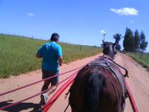

Cia. Ex-sedentário
vamo, vamo, vamo…
Eu: Dois quilômetros?
Eu mesmo: Dois quilômetros!
Eu: Só?
Eu mesmo: Só!
Eu: E foi treino isso?
Eu mesmo: Sim. Até suei em bica.
Eu: Você sua em bica só de amarrar os tênis. Teria sido melhor me deixar dormir, se liga.
Eu mesmo: Semana que vem começam as aulas da pós na PUC.
Eu: E daí?
Eu mesmo: Despedida das férias. Quis correr e estou me sentindo feliz por ter me proporcionado isso: acarinhei-me.
Eu: Viadagem isso. Muito melhor ter ficado mais na cama.
Eu mesmo: Não me encha o saco!
Ontem a noite fui com minha esposa comprar terno novo. O último que havia comprado foi número 56 L. Que delícia comprar um 52M. Não corro por estética, mas que foi gostosa essa sensação. Ah, isso foi sim!
Como o Henrique estava na Vó dele, passamos em casa, peguei uma roupa de corrida, lógico, e dormimos todos juntos na Vó do Henrique, de onde pude sair hoje às 05:40 horas para um treino que seria decididamente lento.
Mas depois de meia hora estava me sentindo bem e resolvi rodar (por isso que carrego garrafa com água mesmo em treino de 2km). E rodei. Rodei gostoso.
De acordo com o link abaixo foram 13,67 km em 01H38Min16s.
Muito bom. Gostoso demais da conta.
http://www.mapmyrun.com/route/br/s%e3o%20paulo/691126822564129688
Segunda-feira: Surgiu a oportunidade de treinar em um bom horário, quer dizer, não muito cedo. Levamos o Henrique na vó dele e poderia voltar de lá correndo às 06:00 horas. Mas devido ao final de semana e preguiça mesmo, só corri 2,5 quilômetros e caminhei outro tanto deste (para chegar em casa).
Terça-feira: Mesma oportunidade de treino, mais disposição e outro caminho. Podemos considerar como treino efetivo: 6, 8 km, incluindo uma subidinha de 400 metros. Nada mal.
Nesta semana terão mais festas. Para ser exato uma festinha (porque não irá até muito tarde, espero) na quinta e um festão na sexta (esta sim, com dança até às 04 da madruga). Tenho de dormir direitinho e encaixar treinos. Semana que vem voltam as aulas da pós-graduação. Ficará tudo mais difícil.
Enquanto todos os amigos de blogs e equipe estiveram tomados com eventos especiais neste final de semana, os ex-sedentários Alecão e Claudião estiveram no interior de São Paulo (Presidente Prdente/Regente Feijó/Indiana) para uma festão em família: a primeira depois da morte dos nossos avós.
Sábado: O Alecão chegou antes na casa da minha mãe em Regente, às 23:30 horas da sexta-feira. O resto da patota, incluindo que este escrevinhador, chegou no sábado cedo.
Depois de uma noite mal dormida num ônibus (sete horas de viagem) e um café maravilhoso com pães confeitados pela minha mãe, Alecão e Rafael toparam fazer um treininho no calorão brabo de Presidente Prudente.
Foram 4 quilômetros, ou algo em torno disso, com direito a umas voltinhas numa pista de atletismo de um campo de futebol. Até tentei fazer uns pliométricos os quais o Rafel os chamou de epiléticos. Pela aparência tosca com que os executei talvez fosse a melhor designação mesmo.
Depois do treino, um banhão e tivemos de encarar uma MARATONA de churrasco que durou a tarde toda.

O Alecão depois do Treino. Parabéns, Alecão, que venham os nossos próximos treinos juntos!


Fotos do problemão que tivemos de enfrentar. O que fizemos com galhardia. Mas não foi fácil, não! Pra descer toda essa carne com o calor que estava fazendo foi preciso muita coragem e muita cerveja.
Domingo:
Antes da continuação da festa que iria domingão afora, fomos no sítio dos nossos avós. Aproveitando a oportunidade em que meu e filho e outros andariam de charrete com meu pai, participei de um desafio. As fotos ilustram como ele foi:

Os pilotos dos desafio: Dante e Henrique (meu filho), prontos para detonarem comigo.

O DESAFIO: o ANIMAL contra a ÉGUA (puxando uma charrete com duas crianças e dois adultos)

O Alecão me consolando por ter aberto o bico já no quarto quilômetro do desafio/treino.
Foi um treino muito divertido, justo no local onde passei minha infância e junto do meu filho e do meu pai.
Depois disso, mais churrasco. Sete horas de ônibus. Uma soneca e tudo de volta a mais perfeita normalidade onde se inclui a maldita, tormentosa e cuel DIETA.
Nem sei como começar esse post de tão feliz que fiquei, foi uma corrida muito divertida, largamos juntos o Paulo e eu, ele saiu muito rápido eu fui acompanhando logo no 1º km o Paulo estabelece um ritmo e eu sigo em frente sozinho para encarar os próximos 20 km e assim segui fui num ritmo confortável media de 5min por km, só consegui pegar água com 6 km de corrida, mas isso não me atrapalhou com 8 km de prova tomei meu 1º sache de carboidrato e o 2º com 16 km que foi o suficiente para completar bem a prova.
Não sei por que eles oferecem Gatorade nessas competições, vira uma bagunça e a pessoa perder muito tempo pra pegar, deve ter um jeito mais eficiente de fazer isso.
Meu tempo e classificação geral
Fotos e video da chegada.


Vídeo
Só consegui reservar um tempinho para mim hoje. Foram 6 km em ritmo leve, para poder ter pelo menos mais um treino antes que a semana se encerre.
Esta semana está complicada. Dormir, o que é isso? Mas antes que batesse qualquer desânimo eu parei e mantive um diálogo comigo mesmo:
– Claudio, veja a situação de forma diferente. Imagine que não está treinando porque se machucou bem no meio de um planejamento para um evento próximo. Isso acontece como todo mundo e não será diferente você. Então, imagine-se que está vivendo um momento crítico desses e tem de administrá-lo para não por tudo a perder.
Em vista disso, cheguei na rua hoje com o espirito forte. Com ele forte não me preocupei com as pernas, nem a com respiração. O treino assim foi prazeroso e sigo vivo, corredor. Corredor que ama a vida e todos que por aqui acompanham a nossa saga.
Fazer da minha semana louca um “treinamanto” para a situação imaginada no meu autodiálogo funcionou muito bem, porque no meio da correria (e bota correria) toda eu não me esqueci. Fiz flexões de braço no banheiro do escritório; só subi escadas nas estações esta semana e quantas mais pude, além de fazer vários tiros de 20 metros trajando terno, sapato, pastas e trecos. Hidratei-me bem e ainda me alonguei mais do que eu faria numa semana normal de bons treinos.
Estou sem tempo de postar diariamente, hoje mesmo sem tempo vim postar os treinos da semana.
Terça – Treino de 9 km
Quarta – Treino de 9 km
Quinta – No dia anterior foi minha colação de grau cheguei em casa muito tarde dormi pouco e quando acordei na quinta para treinar estava chovendo, consegui uma desculpa para não treinar.
Sexta – Treino de 10 km, finalmente reabriu a pista de cooper no museu.
Sábado – Super treino de 30 km fomos eu e o Paulo e uma galera bem legal da equipe dele o pessoal está se preparando pra uma Ultramaratona 24 horas, o treino deles iria das 5 da manhã até 2 da tarde loucura, adorei o meu treino completei muito bem o percurso fiquei relativamente inteiro em comparação a semana passada, próximo final de semana não terá treino longo, domingo vai ser o dia da Meia Maratona de SP.
Domingo – Acordei bem para treinar e assim fiz, iria fazer uns 9 km, mas só foi possível 6 km, mais cachorros no meu caminho o que me irritou muito e a corrida deixou de ser prazerosa.
Essa semana foi muito boa consegui um volume de 64 km, o ideal seria 70 km, mas está ótimo. Desculpem não detalhar muito é que as coisas aqui estão punk.
Abraços e bons treinos!
Vez por outra eu me dou conta de quanto é pedreira o meu querido e amado bairro com suas ladeiras, calçadas irregulares, tortas, esburacadas e duras: como são duras! Quando tomo, ou melhor, retomo o pé disso, fico com medo da empolgação, que bem pode resultar em lesão. Eu preciso me organizar e conseguir fazer uma atividade complementar e correr dia sim dia não… Isso é um registro apenas, com o intuito de não esquecer desses pormenores capazes de evitar muitos problemas.
Depois do super trote só corri no sábado, no Villa Lobos, onde fui com a esposa e filho, afilhado e compadres. O Henrique e o Pedro (meu afilhado) estavam de skate, muito legal, dei uns piques para que o Henrique pudesse sentir o ventinho enquanto não se equilibra bem no equipamento.
Surgiu a oportunidade de correr, tive a companhia do meu amigo e compadre: Del. Ele esta querendo começar a correr para perder peso e sempre joga um futebolzinho no fim se semana. Foram 30 minutos de trote bom. O Del que começa tem um desempenho que só consegui com 5 meses de treino, todos descritos aqui. Contando com os piques empurrando o Henrique, mais uns saltitos na grama, considero que bom, embora não fosse perfeito dois dias sem atividade alguma (quinta e sexta).
Hoje, domingo, corrri 45 minutos.
Quarta-feira, 22:00 horas, eu de roupinha de corrida e o timão com um gol nas costas. Melhor correr mesmo, eu pensei. Bem. Correr eu não corri, mas eu trotei barbaridade… Dez quilômetros. O maior treino de vizinhança de vai e volta que já fiz. Eu ia treinar em ladeira, mas depois de quatro sobe e desce a preguiça pediu para que eu voltasse o meu bom e velho trote. Estou com sono e já são 01:43. No link, o trajetinho do trote. Boa noite, amigos.
http://www.mapmyrun.com/route/br/s%e3o%20paulo/355126707253160620
Nosso amigo de blog Carlos Dias, os convida a participar do evento:
A palestra aborda, em uma história bastante envolvente e interativa, como a motivação, aliada a estratégias e à crença na vitória fizeram com que o atleta (ultramaratonista) e palestrante Carlos Dias conseguiu superar todas adversidades para realizar seus sonhos.
A travessia de 4 desertos, nos climas mais extremos e inóspitos do mundo e a travessia dos EUA de Leste a Oeste enriquece ainda mais as lições de vida de Carlos, que podem não só ser usadas na vida pessoal como no âmbito empresarial, utilizando conceitos de planejamento, alcance de metas, gerenciamento de riscos, missão, visão, valores e muitos outros.
A palestra “Inteligência na adversidade” traz verdadeiras lições de como encarar a vida com o foco na realização de sonhos, acreditando, porém mantendo os pés no chão e colocando cada desafio diário como uma meta, buscando estratégias racionais para o alcance dos objetivos. As inscrições podem ser feita direto com Carlos Dias através do email carlosdias12@hotmail.com até o dia 28 de Fevereiro de 2010, veja mais informações abaixo.
Programa:
– Visão
– Missão
– Valores
– planejamento
– Lidar com “nãos”
– Busca contínua, mesmo com incerteza
– Assumindo riscos
– Como usar os recursos mentais em momentos difíceis
Organização
Programação
Os “ex-sendetários”, Alex e Claudio estarão lá.
.jpg "DSC01762 (1024x576)")
.jpg "DSC01799 (1024x576)")
.jpg "DSC01805 (1024x576)")
.jpg "DSC01883 (1024x576)")
.jpg "DSC01943 (1024x576)")


Nós somos 100 Juízo
Nós somos Baleias

{kind=link}
{kind=link}
Últimos comentários